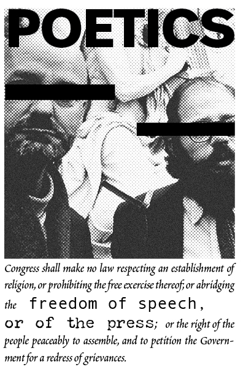

June 2026
Issue 01
Read PDF →
POETICS is a free poetry zine from Bainbridge Island Press. Each issue gathers poems into a pocket-sized chapbook made to be carried, shared, and left for the next reader.
Copies are placed around Bainbridge Island—in libraries, cafés, and other public spots— as part of our commitment to poetry as a living public art. Browse past issues below, or download a PDF to read anywhere.
Click an issue to read the PDF